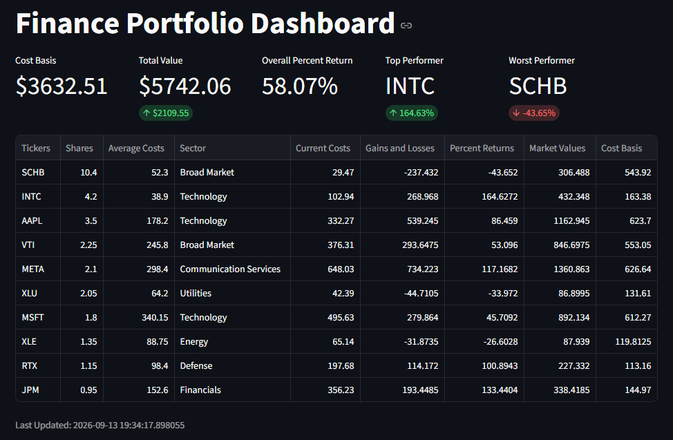

Stock Portfolio Dashboard
Live portfolio tracking: gain/loss, percent return, and total value across holdings, with a returns view per ticker and a distribution view showing sector allocation and a correlation heatmap.
Prices fall back through currentPrice,
regularMarketPrice, and navPrice, so the
app keeps working when yfinance returns partial data. Deployed on
Streamlit Cloud; a push to the tracked branch redeploys it.